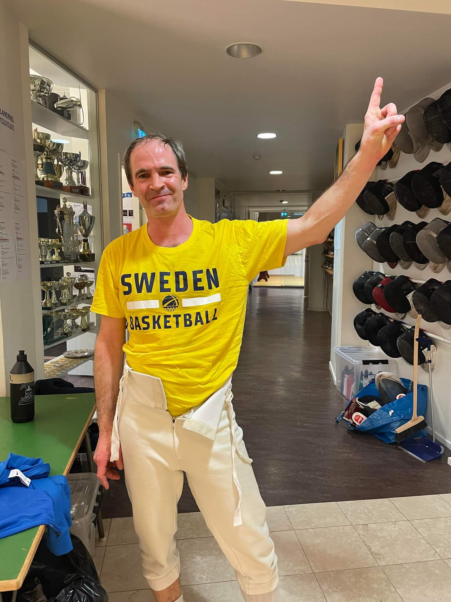
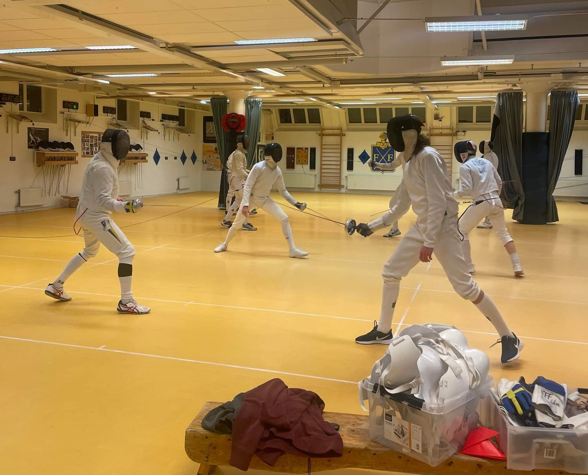
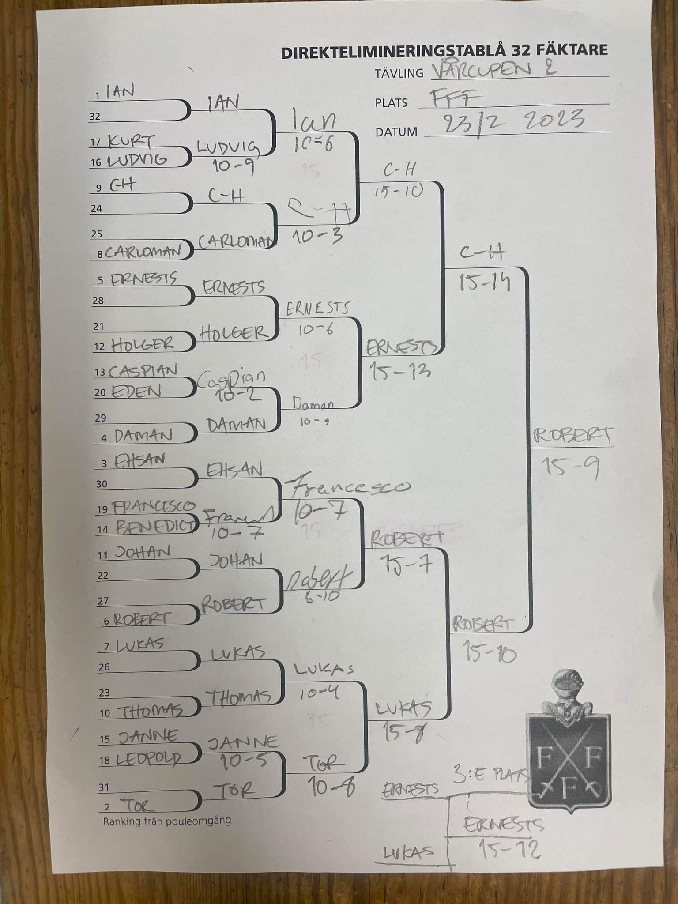

Oj vilken vulkan av aktivitet, viljor och hård kamp som den 2:a deltävlingen i årets Vårcup bjöd på! Låt oss börja med att minnas var vi slutade förra gången. Vi kunde då konstatera att Ian gjorde sig till talesman för den unga generationen som tydligt vill markera att vi står inför en ny era genom att oblygt rycka åt sig segern i deltävling 1. Samtidigt får vi inte glömma bort att Robban egentligen borde ha vunnit, eller i alla fall varit i final, om det inte varit för en olycklig och högst osannolik förlust i kvartsfinalen. Med detta färskt i minnet är vi mogna att kasta oss över torsdagens händelser.
Pouleomgången
Som vanligt lockade Vårcupen till sig en stor skara skickliga och äventyrslystna fäktare. Denna gång fylldes fyra pouleprotokoll med totalt 20 fäktare från när och fjärran. Till den senare kategorin förtjänar Caspian från Ystad ett särskilt omnämnande. Caspian hade tagit sig till Stockholm för att beskåda sin systers modiga försvarade det konungsliga slottet och passade samtidigt på att visa sina färdigheter på FFF:s pister. Väl här kunde han inte motstå frestelsen att göra debut i Vårcupssammanhang.
Till att börja med såg denna deltävling ut att ta vid där den förra slutade. Ian, höll hov i den första poulen med 4 raka segrar och med ett starkt stötindex erövrade han också en 1:a ranking inför direkteliminationen. Men Ian var inte ensam om att briljera, också Tor och Ehsan tog sig igenom poulomgånge med idel segrar och placerade sig i nämnd ordning efter Ian i direktelimineringens ranking.

Kvartsfinalerna
Ian fortsatte på den väg han slagit in på och tog sig utan hinder in i kvarten. Där fick han framfart ett snöpligt slut. CH som medvetet hållit sig i det fördolda valde nu att kliva fram i rampljuset, innan Ian hade förstått vad som hade hänt kunde CH med ett leende förbereda sig på att fäkta semifinal.
Nästa kvartsfinal stod mellan Ernest och Daman. Det utvecklade sig till en jämn kamp som avslutades med en knapp seger för Ernest, som därmed kunde se fram emot en semifinal mot CH.
Ehsan fick dessvärre betala ett högt pris för sina insatser i poulomgången. Trots att han i tack vare sin ranking fick stå över första direktelimineringsmatchen hade hans kraftreserv beskattats så hårt att han inte mäktade med att freda sig mot en sprudlande Francesco som tog över kvartsfinalplatsen. Francescos motståndare i kvartsfinalen blev Robert som nu tydligt visade att stora saker var i görningen. Med klinisk precision avhandlade Robert kvartsfinalen och klev in i semifinalen.
I den sista kvartsfinalen var det Lukas som ställdes öga mot öga mot Tor, för att göra upp om vem som skulle få ta sig an Robert i semin. Här var det Lukas utgick med en klar seger, efter att ha briljerat mot Tor med sina finurliga franska finesser.
Semifinaler
CH som efter att ha besegrat Ian fäktade som i trans mot Ernest i den första semifinalen. Återigen och lyckades CH prestera en bragd när han, med en stöts skillnad, tog sig till final.
I den andra semifinalen var det Lukas och Robert som drabbade samman. Robert var dock kliniskt obeveklig och satte resolut stopp för Lukas frejdiga framfart.
Detta innebar en återkomst av de ärrade veteranerna som i form av CH och Robert skulle göra upp om segern.
Medaljörerna
I den stjärnspäckade finalen försökte CH förgäves surfa vidare på den framgångsvåg som tagit honom förbi till synes oöverstigliga hinder. Dessvärre var motståndet denna gång omöjligt för ens CH att rå på. Robban tog genast grepp om matchen och vred den sedan lugnt och obevekligt utom räckhåll från sin motståndare. Äntligen hade Robert återtagit sin rättmätiga plats i toppen. Grattis Robban!
I matchen om tredjeplaceringen lyckades Ernest skaka av sig den snöpliga förlusten mot C-H i semifinalen och kunde manövrera ut Lukas för att därmed knipa tredjeplatsen. Starkt Ernest!
Så här ser den fullständiga tablån ut

Resultatlistor
Här är den fullständiga resultatlistan från Vårcupens 2:a deltävling
| Resultat från deltävling 2 | ||
| Vårcupen 2023 | ||
| Namn | Placering | Poäng |
|---|---|---|
| Robert Brolin | 1 | 32 |
| C-H Wendt | 2 | 26 |
| Ernest Cimborevics | 3 | 21 |
| Lukas Marcos | 4 | 19 |
| Ian Bäcksröm | 5 | 14 |
| Tor Forsse | 6 | 14 |
| Daman | 7 | 14 |
| Francesco Pelletta | 8 | 14 |
| Ehsan Ashrafi | 9 | 8 |
| Rusu Carloman | 10 | 8 |
| Thomas Schiöler | 11 | 8 |
| Johan Ström | 12 | 8 |
| Holger Claesson | 13 | 8 |
| Caspian | 14 | 8 |
| Jan Tivenius | 15 | 8 |
| Ludvig Dahlström | 16 | 8 |
| Benedict Chambers | 17 | 4 |
| Curt Benkestock | 18 | 4 |
| Leopold Germer | 19 | 4 |
| Eden Renda | 20 | 4 |
Som vi redan kunnat konstatera är vi inne i en kamp mellan generationer där vi har Ian som den främste kämpen från de ungas sida med Robert som representant för de äldre. När vi nu lagt torsdagens möte till handlingarna blir det uppenbart att det ännu är för tidigt att våga spå om åt vilket håll denna generationernas kamp kommer att kantra, eller vad säger ni själva? Titta på totalsammanställningen:
| Totalställning efter 2 deltävlningar | ||||
| # | Namn | Deltävling nr. | Totalt | |
|---|---|---|---|---|
| 1 | 2 | |||
| 1 | Ian Bäcksröm | 32 | 14 | 46 |
| 1 | Robert Brolin | 14 | 32 | 46 |
| 3 | Ernest Cimborevics | 14 | 21 | 35 |
| 4 | C-H Wendt | 8 | 26 | 34 |
| 5 | Jan Tivenius | 21 | 8 | 29 |
| 6 | Tor Forsse | 14 | 14 | 28 |
| 7 | Lukas Marcos | 8 | 19 | 27 |
| 8 | Andrés Gomez | 26 | NA | 26 |
| 9 | Francesco Pelletta | 8 | 14 | 22 |
| 10 | Karsten Kaping | 19 | NA | 19 |
| 11 | Eden Renda | 14 | 4 | 18 |
| 12 | Holger Claesson | 8 | 8 | 16 |
| 12 | Thomas Schiöler | 8 | 8 | 16 |
| 14 | Daman | NA | 14 | 14 |
| 15 | Johan Ström | 4 | 8 | 12 |
| 15 | Rusu Carloman | 4 | 8 | 12 |
| 17 | Louise Ulltjärn | 8 | NA | 8 |
| 17 | Mathias Elmfeldt | 8 | NA | 8 |
| 17 | Anders Brunelius | 8 | NA | 8 |
| 17 | Benedict Chambers | 4 | 4 | 8 |
| 17 | Curt Benkestock | 4 | 4 | 8 |
| 17 | Leopold Germer | 4 | 4 | 8 |
| 17 | Ehsan Ashrafi | NA | 8 | 8 |
| 17 | Caspian | NA | 8 | 8 |
| 17 | Ludvig Dahlström | NA | 8 | 8 |
| 26 | Frederick Marelius | 4 | NA | 4 |
| 26 | Erik Lahomaa | 4 | NA | 4 |
| 26 | Teodor Dahlin | 4 | NA | 4 |
| Vårcupen 2023 | ||||
Vi blickar framåt
Två deltävlingar har nu avverkats men än återstår mycket, ni har väl koll på datumen för de kommande tävlingarna? Om inte kommer kommer här en påminnelse:
- Deltävling 3, torsdagen 30 mar, kl. 19:00
- Deltävling 4, torsdagen 27 apr, kl. 19:00
- Deltävling 5, torsdagen 25 maj, kl. 19:00
Nu är det sportlov och därför ett unikt tillfälle att intensifiera förberedelserna av kropp och själ. Ta hand om er och satsa allt!